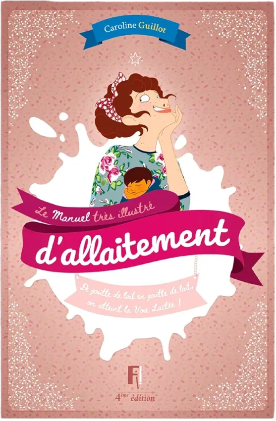
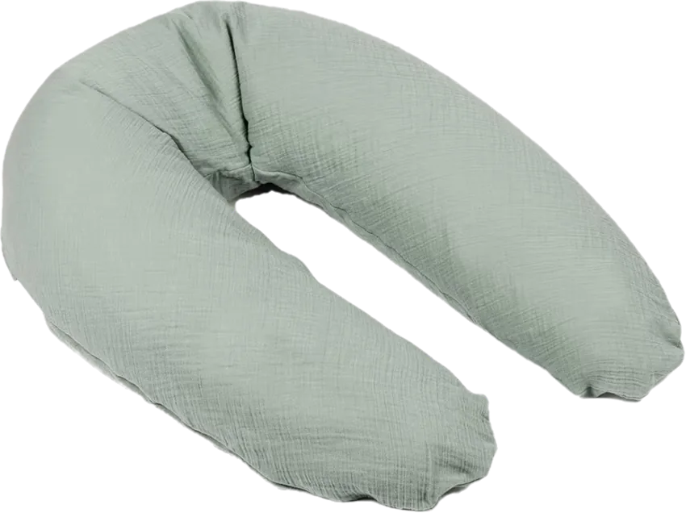
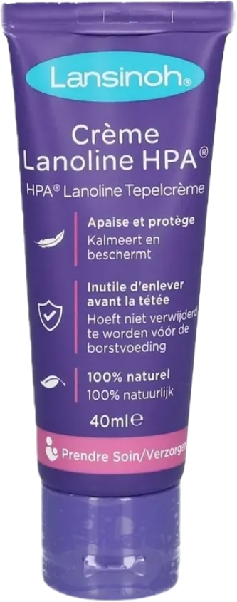
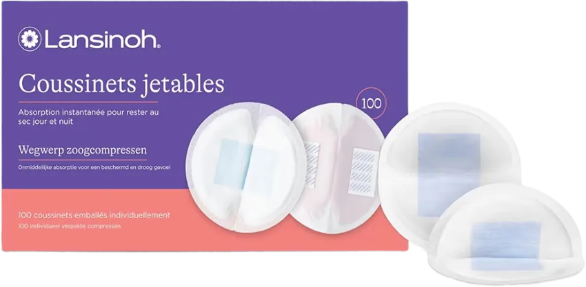
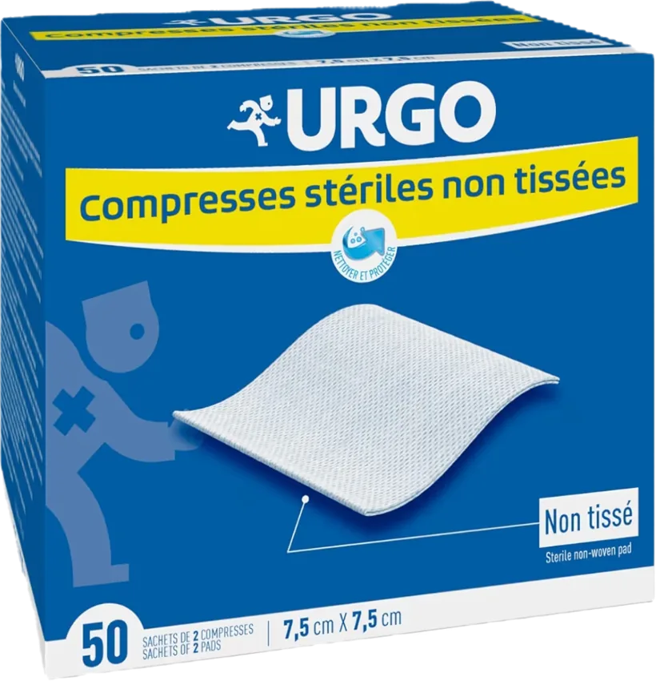

Mes indispensables pour l'allaitement
Ce qui m'a vraiment aidée avec Oscar, entre les premières douleurs, les nuits courtes et les moments tout doux.
L'allaitement, c'est beau. Mais personne ne t'a dit que ça pouvait faire aussi mal.
Crevasses, douleurs, doutes… et ces nuits à 3h du matin où ton bébé se réveille pour la 6e fois, où tu te demandes si ça va être comme ça tous les jours.
Ces pensées négatives qui s'installent… elles sont normales.
L'allaitement, c'est un don de soi.
Immense.
Et personne ne t'en parle vraiment.
J'y suis passée aussi.
Même après 10 mois, il m'arrive encore de répéter mes mantras dans ma tête pour faire taire cette petite voix intérieure.
Des mots doux pour les moments de doute
Pour les nuits difficiles, les moments de doute ou de fatigue, je t'offre mes mantras d'allaitement : des mots doux à garder près de toi pour retrouver un peu de réconfort et faire taire cette petite voix intérieure. Parce que ton cœur aussi a besoin de soutien.
Recevoir mes mantras gratuitsMes indispensables avant de débuter l'allaitement
⚠️ Certains liens sont affiliés. Je peux toucher une commission sans coût supplémentaire pour vous.
Le livre indispensable : Le manuel très illustré d'allaitement

Le manuel très illustré d'allaitementVoir le livreLa position : la clé souvent sous-estimée
On en parle peu… mais la position est essentielle.
Dans le livre que je te recommande, des informations sur l'allaitement, les maux, des témoignages et surtout différentes positions sont expliquées : berceau, ballon de rugby, allongée… Et ça change tout.
Une mauvaise position peut provoquer :
Douleurs et crevasses.
Tensions dans le dos et les épaules
Le coussin d'allaitement

Le coussin d'allaitementVoir le coussinL'indispensable numéro 1.
Il permet de :
Bien installer bébé
Soulager ton corps
Éviter les tensions
Rendre les tétées beaucoup plus confortables
Et souvent… les douleurs diminuent simplement grâce à un bon positionnement.
La crème Lanoline Lansinoh

La crème Lanoline LansinohVoir la crèmeEn prévention mais aussi pour les crevasses et les douleurs aux mamelons.
Celle que toutes les mamans qui allaitent devraient avoir dans leur sac de maternité.
Apaise les mamelons sensibles
100 % naturelle
Sans rinçage avant la tétée
Ultra facile à utiliser
Les coussinets jetables Lansinoh

Les coussinets jetables LansinohVoir les coussinetsMes indispensables pour les fuites de lait.
Tu n'imagines pas à quel point ils changent le quotidien. On n'en parle pas beaucoup… mais se sentir au sec, ça change vraiment le confort.
Discrets
Ultra-absorbants
Protège les mamelons des frottements
Mon coin cocooning pour les tétées : le fauteuil Bercéa
Un vrai plus pour ces longues heures passées à allaiter.
Il permet de :
S'installer confortablement, dos et bras bien soutenus
Avoir un coin rien qu'à toi et bébé, cocooning et apaisant
Te détendre pendant les tétées les plus longues
Un endroit rien qu'à toi pour ces longues séances de tétée, confortable et cocooning.
Les positions d'allaitement : trouver celle qui vous convient
Il n'y a pas de bonne ou mauvaise position, il y a celle qui fonctionne pour vous et votre bébé, ce jour-là.
① La position biologique — Installez-vous semi-allongée et laissez bébé venir à vous. Il suit ses instincts pour trouver le sein naturellement. Idéale en peau à peau, surtout dans les premiers jours.
② La madone — La position la plus classique. Bébé est dans vos bras, sa tête repose dans le pli de votre coude. Parfaite pour débuter et trouver vos repères.
Ces deux positions m'ont beaucoup aidée avec Oscar au début.
Mais il en existe d'autres, allongée sur le côté pour les nuits, ballon de rugby après une césarienne… Chaque situation appelle sa position.
Pour les découvrir toutes et comprendre vraiment comment bien installer bébé au sein, le livre que je recommande ci-dessous est une vraie référence. Il m'a évité beaucoup de tâtonnements.
Les pics de croissance : ces journées où bébé est collé au sein
Tu passes ta journée à allaiter et tu te demandes si tu as assez de lait ?
Respire.
C'est un pic de croissance, et c'est tout à fait normal.
On gère comme on peut, et c'est exactement ce qu'il faut faire.
Ces phases arrivent généralement autour de :
- 3 jours,
- 6 jours,
- 9 jours,
- 3 semaines,
- 6 semaines,
- 9 semaines,
- 3 mois,
- 6 mois,
- 9 mois.
Bébé tète plus souvent pour stimuler ta production et répondre à ses nouveaux besoins.
Ce n'est pas un manque de lait, c'est ton corps qui reçoit le signal de produire davantage.
La demande crée l'offre.
Tiens bon.
Ça dure 2 à 4 jours en général, et ça passe.
L'astuce pansement : soigner les crevasses en milieu humide
Personne ne m'avait parlé de ça à la maternité. Et pourtant c'est l'astuce qui m'a le plus soulagée.
La cicatrisation en milieu humide est la méthode la plus efficace pour les crevasses. Deux options selon ce qui te convient le mieux :
Option 1 — Pansement au lait maternel
Pour celles à l'aise avec le tirage
Prélève quelques gouttes de lait maternel sur une compresse stérile
Pose la compresse directement sur le mamelon douloureux
Recouvre d'un film plastique alimentaire pour maintenir l'humidité
Change toutes les 2h
Option 2 — Pansement à la lanoline
Pour celles qui préfèrent éviter le tirage
Applique une noisette de crème Lanoline Lansinoh sur une compresse
Pose la compresse sur le mamelon entre les tétées
Pas besoin de film plastique
Pas de rinçage avant la tétée, la lanoline est sans danger pour bébé

Les compressesVoir les compressesMes recommandations
N'hésite pas à te faire accompagner.
Si tu rencontres des difficultés, surtout :
ne reste pas seule
Tu peux te faire accompagner par :
Une consultante en lactation (IBCLC)
Une ostéopathe spécialisée bébé
La Leche League
Pour finir
Ton allaitement n'a pas besoin d'être parfait.
Il a juste besoin d'être le tien.
Prends ce qui te fait du bien, entoure-toi, équipe-toi, et avance à ton rythme.
Tu fais déjà quelque chose d'incroyable.
💛 Ces produits m'ont vraiment aidée à mieux vivre mon allaitement.
Si je peux te donner un conseil :
prépare-les à l'avance, ça fait une énorme différence les premiers jours après l'accouchement.
Des mots doux pour les moments de doute
Mon PDF gratuit de mantras d'allaitement.
Recevoir mes mantras gratuitsCe contenu partage une expérience personnelle et ne remplace pas un avis médical. En cas de douleur importante, de fièvre ou de signes d'infection, consulte rapidement un professionnel de santé.